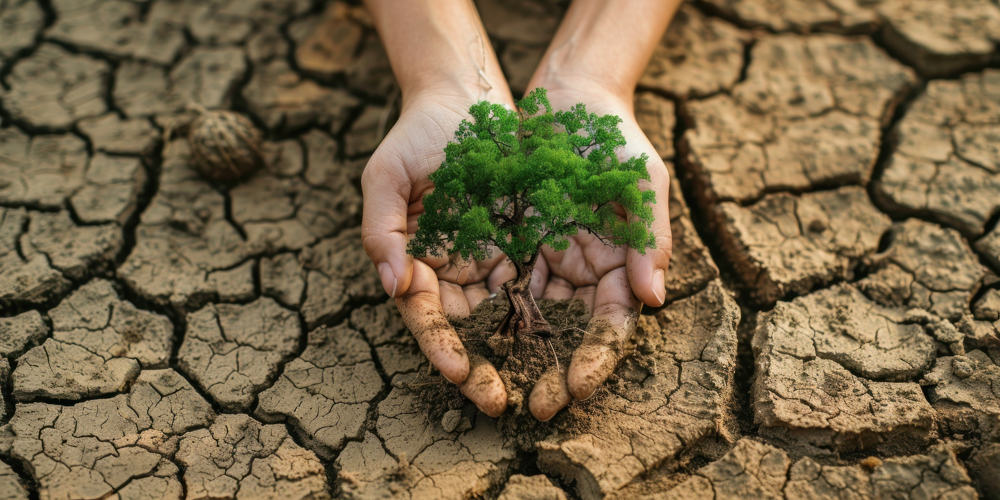

Protect, Restore, and Promote Sustainable Use of Terrestrial Ecosystems
In order to maintain biodiversity and guarantee the health of terrestrial ecosystems, it is essential to protect, restore, and encourage sustainable ecosystem usage. This involves a number of initiatives to stop desertification, manage forests sustainably, and stop land deterioration. Such initiatives aim to promote human welfare as well as environmental sustainability.
Sustainably Manage Forests
Sustainable forest management is essential to preserving the biodiversity and health of forests. It guarantees that forests will always be able to offer a variety of ecosystem services, like water purification, carbon sequestration, and wildlife habitat. Reforestation, conservation, and ethical logging are examples of effective management techniques that strike a balance between the benefits to the environment, the economy, and society.

Combat Desertification
The degradation of land in dry sub-humid, semi-desert and desert environments is known as desertification, and it is mostly brought on by human activity and variations in the weather. Fertile land is lost in this process, agricultural productivity is decreased, and climate change vulnerability is raised. Sustainable land management techniques, such as managing water resources, conserving soil, and restoring degraded areas to increase resilience and productivity, are all important in the fight against desertification.

Halt and Reverse Land Degradation
Degradation of land means the reduction in its quality and productivity, which is frequently caused by unsustainable farming methods, deforestation, and urbanization. Restoring damaged land, encouraging sustainable farming methods, and protecting soil and water resources are all necessary to stop and reverse land degradation. Crop rotation, agroforestry, and the application of organic fertilizers are a few practices that can enhance soil health and stop more degradation.
